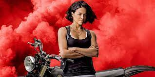
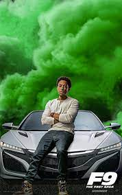

Personagem principal
Vin Diesel

Idade: 45 Anos
Sexo: Masculino
Altura: 1.83 m
Peso: 102 kg
Cor dos olhos: Castanhos
Cor dos cabelos: Careca
Cidade natal: Los Angeles
Curiosidades: Dominic Toretto nasceu no dia 29 de Agosto de 1976. Seu pai foi um piloto profissional de stock car que conquistou sua reputação nas pistas e com sua família com um mercado e lanchonete. Quando criança, Dominic se tornou amigo de Vince durante o terceiro ano. Em algum momento ele também fez amizade com Letty em uma vizinhança local quando ela tinha em torno de dez anos, pois ambos compartilhavam o interesse por carros. Entretanto, ele nunca sentiu atração romântica por ela até os dezesseis anos de idade.
Personagem pricipal
John Cenna

Idade: 44 Anos
Sexo: Masculino
Altura: 1,85 m
Peso: 114 kg
Cor dos olhos: Castanhos
Cor do cabelo: Loiro
Cidade natal: West Newbury, Massachusetts, EUA
Curiosidades: John Felix Anthony Cena, Jr. é um lutador profissional, rapper e ator estadunidense, que atualmente trabalha para a promoção WWE. Ele é a principal figura atuante, servindo como a imagem pública da empresa desde 2005.
Personagem principal
Michelle Rodriguez
Idade: 42 Anos
Sexo: Feminino
Altura: 1.65 m
Peso: 54.5 Kg
Cor dos olhos: Pretos
Cor do cabelo: Castanho
Cidade natal: San Antonio, Texas, EUA
Curiosidades: Atriz mais conhecida por atuar no filme de ação Velozes e Furiosos e na série Lost. Em 2000, seu papel no longa Boa de Briga recebeu muitos elogios dos críticos. Interpretou a personagem Rain Ocampo nas produções Resident Evil: O Hóspede Maldito e Resident Evil 5: Retribuição.
Personagem principal
The rock

Idade: 49 Anos
Sexo: Masculino
Altura: 1.96 m
Peso: 84.5 kg
Cor dos olhos: Castanhos
Cor dos cabelos: Careca
Cidade natal: Hayward, Califórnia, EUA
Curiosidades: Dwayne Douglas Johnson, também conhecido pelo seu nome no ringue The Rock, é um ator americano, ex-lutador profissional e ex-jogador de futebol americano universitário pela Universidade de Miami, vencendo o campeonato nacional em 1991 pelo Miami Hurricanes.
Personagem pricipal
Tyrese Gibson
Idade: 42.
Sexo: Masculino
Altura: 1.84 m
Peso: 75.5 kg
Cor dos olhos: Castanhos.
Cor dos cabelos: Careca.
Cidade natal: Watts, Califórnia, EUA.
Curiosidades:Após seu pai, Tyrone Gibson, abandonar a família, sua mãe, Priscilla Murray Gibson, criou Tyrese e seus três irmãos. Ele foi casado com Norma Gibson de 2007 a 2009 e tem uma filha chamada Shayla. Em 2017, casou-se com Samantha Lee Gibson. Ele e Samantha deram às boas-vindas à uma filha chamada Soraya em 2018.
Personagem principal
Luddacris
Idade: 42 Anos
Sexo: Masculino
Altura: 1,73m
Peso: 77 Kg
Cor dos olhos: Castanhos
Cor dos cabelos: Castanho escuro
Cidade natal: Champaign, Illinois, EUA
Curiosidades: É filho de Roberta Shields e Wayne Brian Bridges. Casou-se com Eudoxie Mbouguiengue em 2014. Ele tem três filhas, chamadas Karma, Cai e Cadence. Em maio de 2021, Eudoxie comemorou seu 35º aniversário no Instagram revelando que ela e Ludacris estão esperando a segunda criança juntos.
Personagem principal
Sung kang

Idade: 49 anos
Sexo: Masculino
Altura: 1,83
Peso: 81 kg
Cor dos olhos: Pretos
Cor dos cabelos: Pretos
Cidade natal: Gainesville, Geórgia, EUA.
Curiosidades: Vida e carreira. Kang nasceu em Gainesville, filho de imigrantes vindos da Coreia do Sul. Ele interpretou Han em Velozes e Furiosos: Desafio em Tóquio , Velozes e Furiosos 4 , Velozes e Furiosos 5 e Velozes e Furiosos 6. Ele foi uma das estrelas no filme The Motel, no qual ele interpretou Sam Kim.